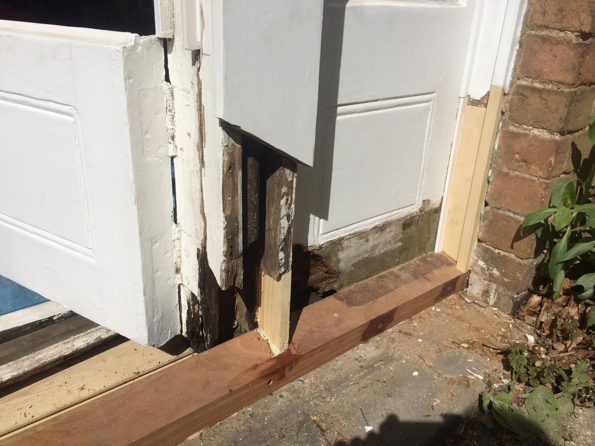
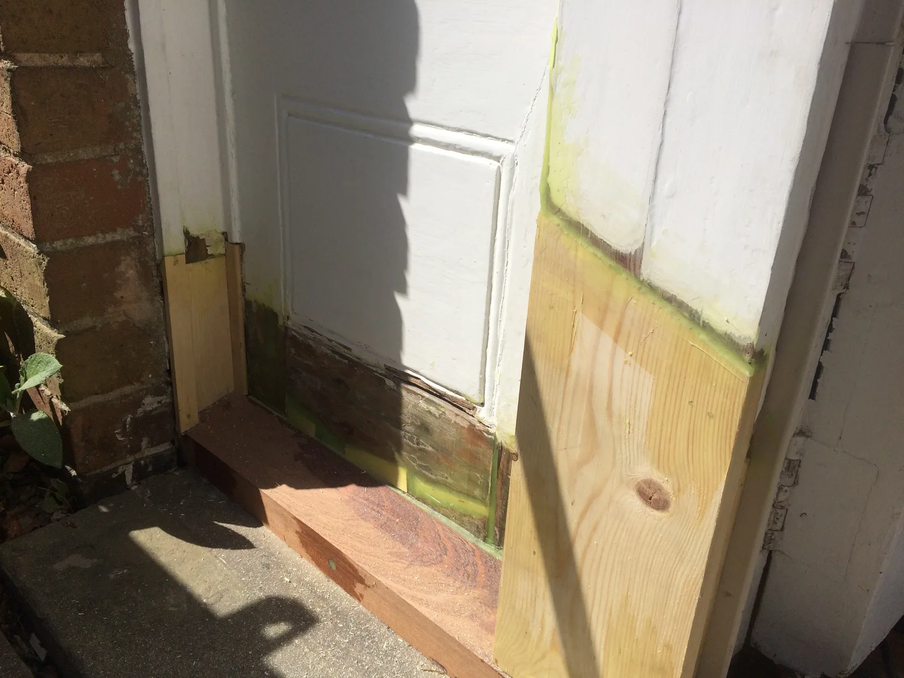
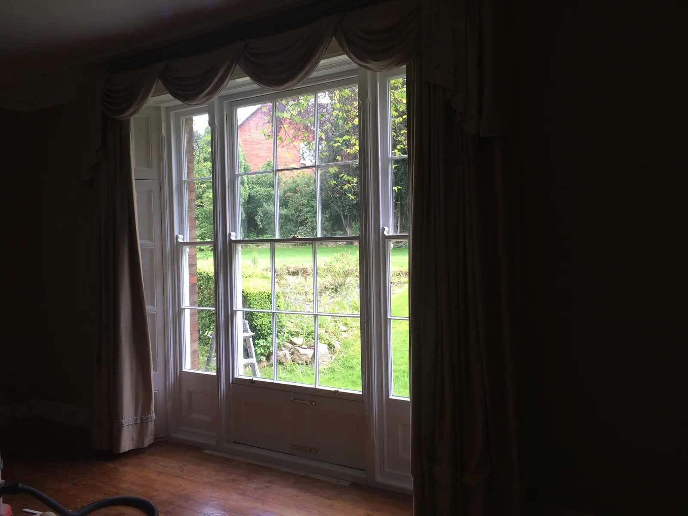
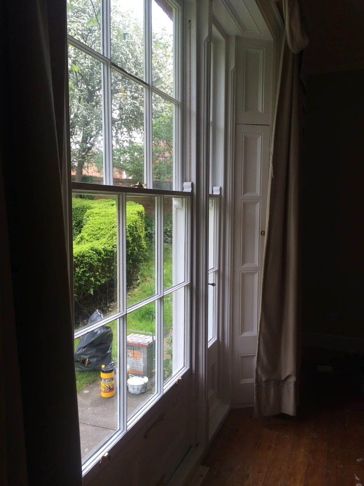
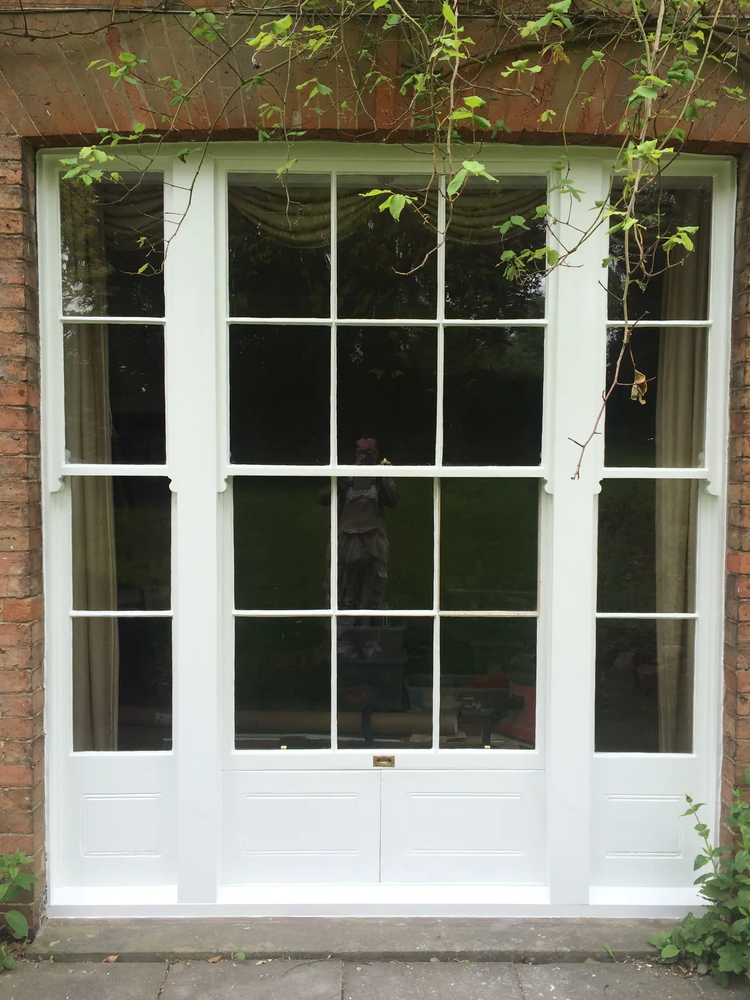
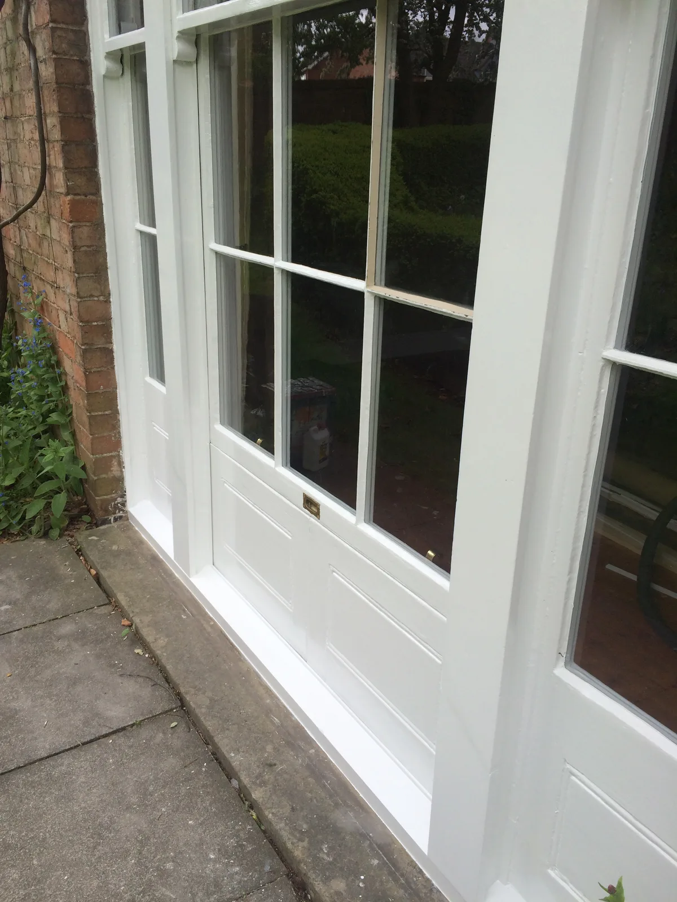
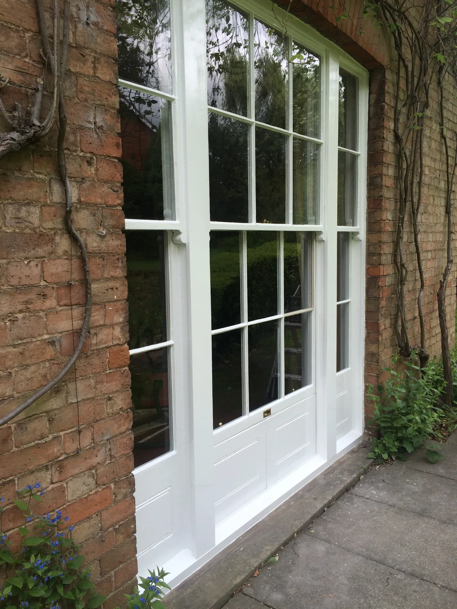

01 / 07
P—01
Grade II listed sash windows
Work carried out to restore damaged joinery from a former Rectory to its original Georgian glory. External repairs and refurbishment of internal pocket shutters.
Georgian sash windowsPeriod
propertySill replacement